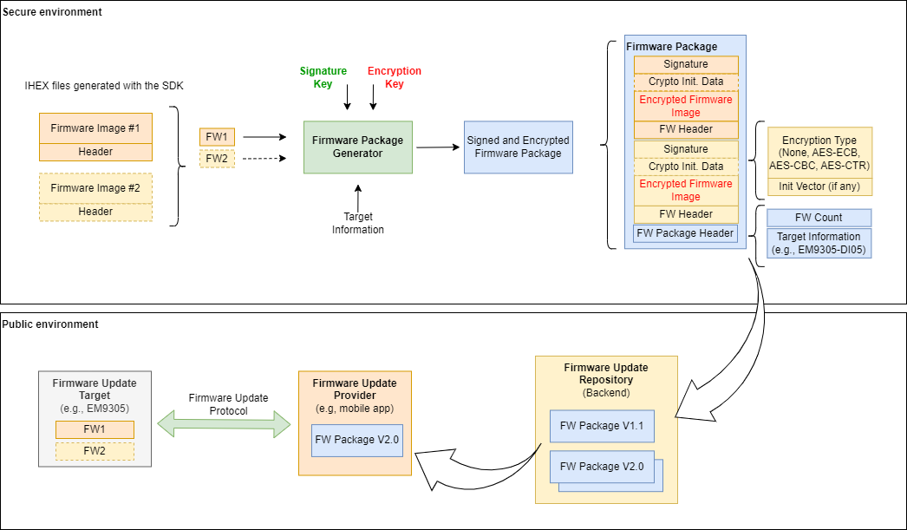
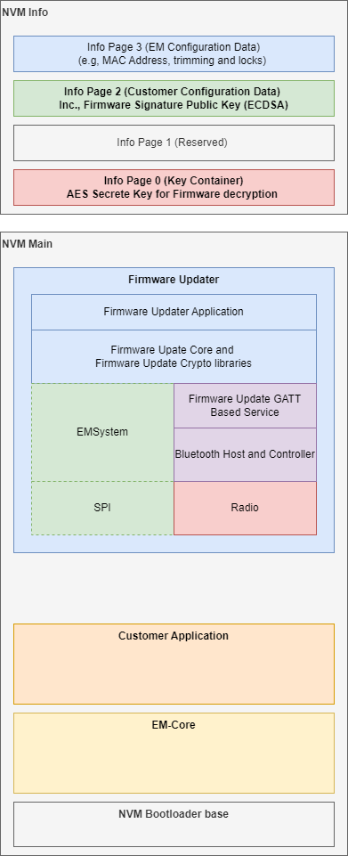
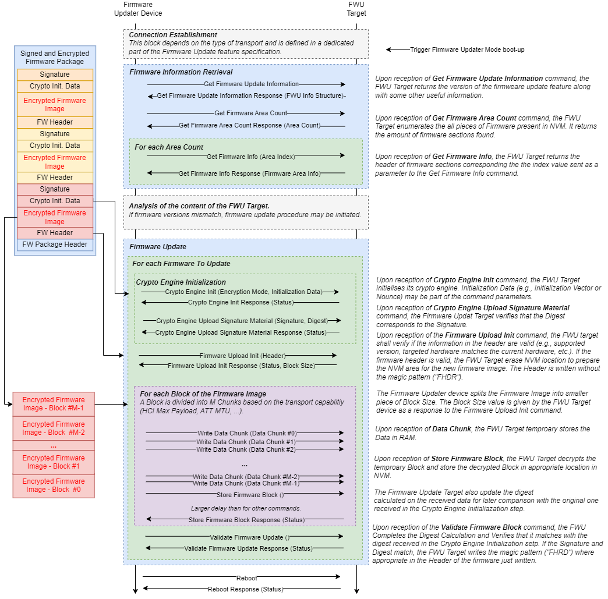

Firmware Update Documentation
1. Introduction
This part introduces the Firmware Update (FWU) functionality for the EM9305 Bluetooth LE System on Chip.
In the context of the Firmware Update feature, the following roles are defined:
Firmware Update Target (FWU Target): The FWU Target is the device to be updated.
Firmware Update Provider (FWU Provider): The FWU Provider is the device performing the update of the FWU Target via a supported transport (e.g., Bluetooth or SPI).
Other elements involved in the firmware update flow such as firmware update storage (or backend) are outside of the scope of the so called Firmware Update feature.
The figures below depict the high level flow of the firmware update feature, from the generation of a firmware package to its deployment on a FWU Target in the field.
The updated version of the firmware image is built in a secure environment. This is due to the fact that the image is signed and encrypted. This process uses private keys that must not be pushed outside of this environment.
When the firmware image has been created, the update process can be done in an insecure environment (the public one). The two pictures below show what is done in each of these two environments.
{kind=link}
1.1 Firmware Organization in NVM
The FWU Target firmware is organized as follow in the NVM:
{kind=link}
1.2 Key Requirements
The Firmware Update feature fulfills the following requirements:
The firmware image build process shall provide the possibility to encrypt the firmware image before it is transmitted to the FWU target. In this case, the following algorithms shall be supported:
AES CBC
AES ECB
AES CTR
The firmware image build process shall provide the possibility to sign the firmware image using the ECDSA algorithm.
The public keys used to verify the firmware image signature shall be stored in the user area information page of the FWU target.
The firmware image build process shall provide a way for the user to enable/disable encryption and/or signature.
In case no specific request is done, by default the firmware image shall neither be encrypted nor signed.
A firmware image with a wrong signature shall be rejected and discarded.
A firmware image encrypted with private keys that do not correspond to the public keys stored in the device shall be rejected and discarded.
The system shall recover (failsafe) from an interruption in the middle of an update procedure.
The Firmware Update feature does not address the following topics:
Mutual authentication at application level
Secure signature and encryption of the firmware package. EM Microelectronic provides a tool to generate a firmware package with encryption and signature features. It is up to the customer to use it this tool in a secure way in order not to share private nor secret keys with inappropriate person.
1.3 Considerations
In the current version of the Firmware Update feature, the Firmware Updater embeds its own Bluetooth LE Host and Controller and exposes the Firmware Update GATT based Service.
The Firmware Update (FWU) functionality includes different parts:
Generation of the firmware package used in the FWU flow,
Firmware Updater sample application
Firmware update target sample application
2 Firmware Package Generator
The Firmware Package Generator (FPG) tool is a command line tool that provides the following set of functions:
Signature Key Generation (set of private and public keys) for ECDSA signature.
AES Key Generation (secret key) for firmware encryption and decryption.
Firmware package generation
Firmware package verification
The generated firmware package is a binary file formatted with protocol buffer. The .proto file is part of the SDK so it can either be modified or used to generate firmware package accessors for the desired platform (e.g., IOS/Android).
Refer to the Firmware Package Generator page for additional information on this part.
3 Firmware Programming
The firmware update feature is transport agnostic. It exposes a number of commands that can be conveyed over multiple transports.
3.1 Firmware Programming Prerequisites
In order to use the firmware update with firmware encryption and firmware signature, both AES Secret key and ECDSA Public key (i.e., Point on the Elliptic curve as X and Y coordinates) shall be stored in the FWU target prior to being used.
3.2 AES Key for Firmware Encryption
The AES Private key may either be hardcoded in the firmware updater application or stored in dedicated key container.
The sample application provided in the SDK uses Key Container number 7 for firmware decryption key. BLEngine provides a mechanism to upload a secret key in a key container. In the example below, the key is a test key that shall not be used in production.
The following command can be used to write a key in a given key container:
cd <SDK_ROOT>\tools\blengine\
python blengine_cli.py --port COMxy run write_key --index=7 --secret_key="0xdc43496ddc7b4eb046f470054a14cb8d"
The following command can be used to invalidate the key:
cd <SDK_ROOT>\tools\blengine\
python blengine_cli.py --port COMxy run invalidate_key --index=7
Warning
Once a key has been invalidated, it is not possible to validate it again.
The following command can be used to clear the information page containing the key containers.
cd <SDK_ROOT>\tools\blengine\
python blengine_cli.py --port COMxy run clear_key_container
3.3 ECDSA Public Key for Signature Verification
The ECDSA Public Key used for signature verification shall be programmed in Information Page 2 (user area) under “patch key” section.
The XY coordinates of the public key can be programmed using the BLEngine which is provided in the SDK.
Step 1: Press the “User” button on the DVK to enter configuration mode. The “Test Mode (TM)” LED should be on.
Step 2: Read Information Page 2
cd <SDK_ROOT>\tools\blengine\
python blengine_cli.py --port COMxy run nvm_read --out_file ..\fw_update\myP2.json --page user
Step 3: Edit the JSON file (located in <SDK_ROOT>\tools\fw_update) and add the XY coordinates to the section “Keys” as follow:
1"Keys": {
2 "data": {
3 "patch_public_key_x": {
4 "value": "0x2BC75B235B18C989796E6DCA744036C37EB94F49A1B2C74FE4A426FA329D93E0"
5 },
6 "patch_public_key_y": {
7 "value": "0x9352F7EBEF08E699390888C1671D121167FA23DBFFCE9AB4DDBFAD0EADD2A516"
8 }
9 }
10 },
Step 4: Write Information Page 2
cd <SDK_ROOT>\tools\blengine\
python blengine_cli.py --port COMxy run nvm_write --in_file ..\fw_update\myP2.json --page user
The above authentication test public key corresponds to the test key provided in the SDK under ecdsa0_pub.pem with its associated private key ecdsa0_pri.pem.
3.4 Firmware Update Sequence
The firmware update sequence is described in the figure below.
{kind=link}
3.5 Firmware Update via SPI
Firmware Update via SPI uses EM System commands that are a subset of the HCI Vendor specific commands as per defined in the Bluetooth Core specification.
These commands are available in BLEngine.
3.6 Firmware Update via Bluetooth LE
Firmware Update via Bluetooth LE uses a vendor specific GATT-based service named EM Firmware Update Service (EMFWUS).
This service is defined in this section: EM Firmware Update Service.